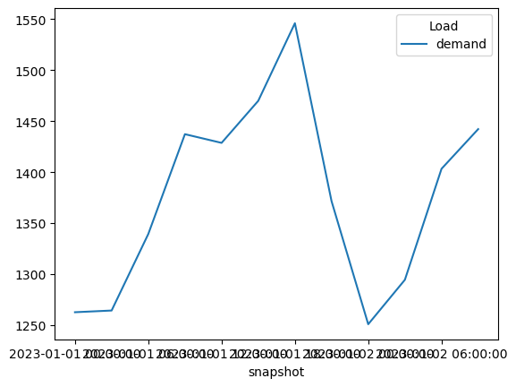

PyPSA: Modelling Capacity Expansion Scenarios#
Individual learning outcomes#
Interpret the results from a PyPSA model, understanding the difference between model parameters and variables (inputs and results)
See what insights can be obtained from the model, and how assumptions and data quality affect the results
Use exploratory and normative scenarios approaches to structure a modelling analysis
Note
Also in this tutorial, you might want to refer to the PyPSA documentation for more details: https://docs.pypsa.org.
Mathematical representation of capacity expansion planning#
Review the problem formulation of the power system model. Below you can find an adapted version where the capacity limits have been promoted to decision variables with corresponding terms in the objective function and new constraints for their expansion limits (e.g. wind and solar potentials). This is known as capacity expansion problem.
such that
New decision variables for capacity expansion planning:
\(G_{i,s}\) is the generator capacity at bus \(i\), technology \(s\),
\(F_{\ell}\) is the transmission capacity of line \(\ell\),
\(G_{i,r,\text{dis-/charge}}\) denotes the charge and discharge capacities of storage unit \(r\) at bus \(i\),
\(E_{i,r}\) is the energy capacity of storage \(r\) at bus \(i\) and time step \(t\).
New parameters for capacity expansion planning:
\(c_{\star}\) is the capital cost of technology \(\star\) at bus \(i\)
\(w_t\) is the weighting of time step \(t\) (e.g. number of hours it represents)
\(\underline{G}_\star, \underline{F}_\star, \underline{E}_\star\) are the minimum capacities per technology and location/connection.
\(\underline{G}_\star, \underline{F}_\star, \underline{E}_\star\) are the maximum capacities per technology and location.
Note
For a full reference to the optimisation problem description, see https://docs.pypsa.org/latest/user-guide/optimization/overview/
Install nessecary packages
%pip install pandas pypsa
Requirement already satisfied: pandas in /home/runner/miniconda3/envs/pypsa-zambia-workshops/lib/python3.13/site-packages (3.0.3)
Requirement already satisfied: pypsa in /home/runner/miniconda3/envs/pypsa-zambia-workshops/lib/python3.13/site-packages (1.2.1)
Requirement already satisfied: numpy>=1.26.0 in /home/runner/miniconda3/envs/pypsa-zambia-workshops/lib/python3.13/site-packages (from pandas) (2.4.6)
Requirement already satisfied: python-dateutil>=2.8.2 in /home/runner/miniconda3/envs/pypsa-zambia-workshops/lib/python3.13/site-packages (from pandas) (2.9.0.post0)
Requirement already satisfied: scipy in /home/runner/miniconda3/envs/pypsa-zambia-workshops/lib/python3.13/site-packages (from pypsa) (1.17.1)
Requirement already satisfied: xarray<2026.4 in /home/runner/miniconda3/envs/pypsa-zambia-workshops/lib/python3.13/site-packages (from pypsa) (2026.2.0)
Requirement already satisfied: netcdf4 in /home/runner/miniconda3/envs/pypsa-zambia-workshops/lib/python3.13/site-packages (from pypsa) (1.7.2)
Requirement already satisfied: linopy>=0.6.1 in /home/runner/miniconda3/envs/pypsa-zambia-workshops/lib/python3.13/site-packages (from pypsa) (0.6.6)
Requirement already satisfied: matplotlib in /home/runner/miniconda3/envs/pypsa-zambia-workshops/lib/python3.13/site-packages (from pypsa) (3.10.9)
Requirement already satisfied: plotly in /home/runner/miniconda3/envs/pypsa-zambia-workshops/lib/python3.13/site-packages (from pypsa) (6.6.0)
Requirement already satisfied: pydeck>=0.6 in /home/runner/miniconda3/envs/pypsa-zambia-workshops/lib/python3.13/site-packages (from pypsa) (0.9.2)
Requirement already satisfied: seaborn in /home/runner/miniconda3/envs/pypsa-zambia-workshops/lib/python3.13/site-packages (from pypsa) (0.13.2)
Requirement already satisfied: geopandas>=0.9 in /home/runner/miniconda3/envs/pypsa-zambia-workshops/lib/python3.13/site-packages (from pypsa) (1.1.3)
Requirement already satisfied: shapely in /home/runner/miniconda3/envs/pypsa-zambia-workshops/lib/python3.13/site-packages (from pypsa) (2.1.1)
Requirement already satisfied: networkx>=2 in /home/runner/miniconda3/envs/pypsa-zambia-workshops/lib/python3.13/site-packages (from pypsa) (3.6.1)
Requirement already satisfied: deprecation in /home/runner/miniconda3/envs/pypsa-zambia-workshops/lib/python3.13/site-packages (from pypsa) (2.1.0)
Requirement already satisfied: validators in /home/runner/miniconda3/envs/pypsa-zambia-workshops/lib/python3.13/site-packages (from pypsa) (0.35.0)
Requirement already satisfied: highspy in /home/runner/miniconda3/envs/pypsa-zambia-workshops/lib/python3.13/site-packages (from pypsa) (1.14.0)
Requirement already satisfied: levenshtein>=0.27.1 in /home/runner/miniconda3/envs/pypsa-zambia-workshops/lib/python3.13/site-packages (from pypsa) (0.27.3)
Requirement already satisfied: platformdirs in /home/runner/miniconda3/envs/pypsa-zambia-workshops/lib/python3.13/site-packages (from pypsa) (4.9.6)
Requirement already satisfied: packaging>=24.1 in /home/runner/miniconda3/envs/pypsa-zambia-workshops/lib/python3.13/site-packages (from xarray<2026.4->pypsa) (25.0)
Requirement already satisfied: rapidfuzz<4.0.0,>=3.9.0 in /home/runner/miniconda3/envs/pypsa-zambia-workshops/lib/python3.13/site-packages (from levenshtein>=0.27.1->pypsa) (3.14.5)
Requirement already satisfied: bottleneck in /home/runner/miniconda3/envs/pypsa-zambia-workshops/lib/python3.13/site-packages (from linopy>=0.6.1->pypsa) (1.6.0)
Requirement already satisfied: toolz in /home/runner/miniconda3/envs/pypsa-zambia-workshops/lib/python3.13/site-packages (from linopy>=0.6.1->pypsa) (1.1.0)
Requirement already satisfied: numexpr in /home/runner/miniconda3/envs/pypsa-zambia-workshops/lib/python3.13/site-packages (from linopy>=0.6.1->pypsa) (2.14.1)
Requirement already satisfied: dask>=0.18.0 in /home/runner/miniconda3/envs/pypsa-zambia-workshops/lib/python3.13/site-packages (from linopy>=0.6.1->pypsa) (2026.3.0)
Requirement already satisfied: polars>=1.31.1 in /home/runner/miniconda3/envs/pypsa-zambia-workshops/lib/python3.13/site-packages (from linopy>=0.6.1->pypsa) (1.40.1)
Requirement already satisfied: tqdm in /home/runner/miniconda3/envs/pypsa-zambia-workshops/lib/python3.13/site-packages (from linopy>=0.6.1->pypsa) (4.67.3)
Requirement already satisfied: google-cloud-storage in /home/runner/miniconda3/envs/pypsa-zambia-workshops/lib/python3.13/site-packages (from linopy>=0.6.1->pypsa) (1.31.2)
Requirement already satisfied: requests in /home/runner/miniconda3/envs/pypsa-zambia-workshops/lib/python3.13/site-packages (from linopy>=0.6.1->pypsa) (2.34.1)
Requirement already satisfied: click>=8.1 in /home/runner/miniconda3/envs/pypsa-zambia-workshops/lib/python3.13/site-packages (from dask>=0.18.0->linopy>=0.6.1->pypsa) (8.3.3)
Requirement already satisfied: cloudpickle>=3.0.0 in /home/runner/miniconda3/envs/pypsa-zambia-workshops/lib/python3.13/site-packages (from dask>=0.18.0->linopy>=0.6.1->pypsa) (3.1.2)
Requirement already satisfied: fsspec>=2021.09.0 in /home/runner/miniconda3/envs/pypsa-zambia-workshops/lib/python3.13/site-packages (from dask>=0.18.0->linopy>=0.6.1->pypsa) (2026.4.0)
Requirement already satisfied: partd>=1.4.0 in /home/runner/miniconda3/envs/pypsa-zambia-workshops/lib/python3.13/site-packages (from dask>=0.18.0->linopy>=0.6.1->pypsa) (1.4.2)
Requirement already satisfied: pyyaml>=5.3.1 in /home/runner/miniconda3/envs/pypsa-zambia-workshops/lib/python3.13/site-packages (from dask>=0.18.0->linopy>=0.6.1->pypsa) (6.0.3)
Requirement already satisfied: locket in /home/runner/miniconda3/envs/pypsa-zambia-workshops/lib/python3.13/site-packages (from partd>=1.4.0->dask>=0.18.0->linopy>=0.6.1->pypsa) (1.0.0)
Requirement already satisfied: polars-runtime-32==1.40.1 in /home/runner/miniconda3/envs/pypsa-zambia-workshops/lib/python3.13/site-packages (from polars>=1.31.1->linopy>=0.6.1->pypsa) (1.40.1)
Requirement already satisfied: jinja2>=2.10.1 in /home/runner/miniconda3/envs/pypsa-zambia-workshops/lib/python3.13/site-packages (from pydeck>=0.6->pypsa) (3.1.6)
Requirement already satisfied: MarkupSafe>=2.0 in /home/runner/miniconda3/envs/pypsa-zambia-workshops/lib/python3.13/site-packages (from jinja2>=2.10.1->pydeck>=0.6->pypsa) (3.0.3)
Requirement already satisfied: six>=1.5 in /home/runner/miniconda3/envs/pypsa-zambia-workshops/lib/python3.13/site-packages (from python-dateutil>=2.8.2->pandas) (1.17.0)
Requirement already satisfied: google-auth<2.0dev,>=1.11.0 in /home/runner/miniconda3/envs/pypsa-zambia-workshops/lib/python3.13/site-packages (from google-cloud-storage->linopy>=0.6.1->pypsa) (1.25.0)
Requirement already satisfied: google-cloud-core<2.0dev,>=1.4.1 in /home/runner/miniconda3/envs/pypsa-zambia-workshops/lib/python3.13/site-packages (from google-cloud-storage->linopy>=0.6.1->pypsa) (1.7.2)
Requirement already satisfied: google-resumable-media<2.0dev,>=1.0.0 in /home/runner/miniconda3/envs/pypsa-zambia-workshops/lib/python3.13/site-packages (from google-cloud-storage->linopy>=0.6.1->pypsa) (1.3.3)
Requirement already satisfied: cachetools<5.0,>=2.0.0 in /home/runner/miniconda3/envs/pypsa-zambia-workshops/lib/python3.13/site-packages (from google-auth<2.0dev,>=1.11.0->google-cloud-storage->linopy>=0.6.1->pypsa) (4.2.4)
Requirement already satisfied: pyasn1-modules>=0.2.1 in /home/runner/miniconda3/envs/pypsa-zambia-workshops/lib/python3.13/site-packages (from google-auth<2.0dev,>=1.11.0->google-cloud-storage->linopy>=0.6.1->pypsa) (0.4.2)
Requirement already satisfied: setuptools>=40.3.0 in /home/runner/miniconda3/envs/pypsa-zambia-workshops/lib/python3.13/site-packages (from google-auth<2.0dev,>=1.11.0->google-cloud-storage->linopy>=0.6.1->pypsa) (82.0.1)
Requirement already satisfied: rsa<5,>=3.1.4 in /home/runner/miniconda3/envs/pypsa-zambia-workshops/lib/python3.13/site-packages (from google-auth<2.0dev,>=1.11.0->google-cloud-storage->linopy>=0.6.1->pypsa) (4.9.1)
Requirement already satisfied: google-api-core<2.0.0dev,>=1.21.0 in /home/runner/miniconda3/envs/pypsa-zambia-workshops/lib/python3.13/site-packages (from google-cloud-core<2.0dev,>=1.4.1->google-cloud-storage->linopy>=0.6.1->pypsa) (1.27.0)
Requirement already satisfied: googleapis-common-protos<2.0dev,>=1.6.0 in /home/runner/miniconda3/envs/pypsa-zambia-workshops/lib/python3.13/site-packages (from google-api-core<2.0.0dev,>=1.21.0->google-cloud-core<2.0dev,>=1.4.1->google-cloud-storage->linopy>=0.6.1->pypsa) (1.75.0)
Requirement already satisfied: protobuf>=3.12.0 in /home/runner/miniconda3/envs/pypsa-zambia-workshops/lib/python3.13/site-packages (from google-api-core<2.0.0dev,>=1.21.0->google-cloud-core<2.0dev,>=1.4.1->google-cloud-storage->linopy>=0.6.1->pypsa) (5.29.3)
Requirement already satisfied: pytz in /home/runner/miniconda3/envs/pypsa-zambia-workshops/lib/python3.13/site-packages (from google-api-core<2.0.0dev,>=1.21.0->google-cloud-core<2.0dev,>=1.4.1->google-cloud-storage->linopy>=0.6.1->pypsa) (2026.2)
Requirement already satisfied: google-crc32c<2.0dev,>=1.0 in /home/runner/miniconda3/envs/pypsa-zambia-workshops/lib/python3.13/site-packages (from google-resumable-media<2.0dev,>=1.0.0->google-cloud-storage->linopy>=0.6.1->pypsa) (1.8.0)
Requirement already satisfied: charset_normalizer<4,>=2 in /home/runner/miniconda3/envs/pypsa-zambia-workshops/lib/python3.13/site-packages (from requests->linopy>=0.6.1->pypsa) (3.4.7)
Requirement already satisfied: idna<4,>=2.5 in /home/runner/miniconda3/envs/pypsa-zambia-workshops/lib/python3.13/site-packages (from requests->linopy>=0.6.1->pypsa) (3.13)
Requirement already satisfied: urllib3<3,>=1.26 in /home/runner/miniconda3/envs/pypsa-zambia-workshops/lib/python3.13/site-packages (from requests->linopy>=0.6.1->pypsa) (2.5.0)
Requirement already satisfied: certifi>=2023.5.7 in /home/runner/miniconda3/envs/pypsa-zambia-workshops/lib/python3.13/site-packages (from requests->linopy>=0.6.1->pypsa) (2026.4.22)
Requirement already satisfied: pyasn1>=0.1.3 in /home/runner/miniconda3/envs/pypsa-zambia-workshops/lib/python3.13/site-packages (from rsa<5,>=3.1.4->google-auth<2.0dev,>=1.11.0->google-cloud-storage->linopy>=0.6.1->pypsa) (0.6.3)
Requirement already satisfied: contourpy>=1.0.1 in /home/runner/miniconda3/envs/pypsa-zambia-workshops/lib/python3.13/site-packages (from matplotlib->pypsa) (1.3.3)
Requirement already satisfied: cycler>=0.10 in /home/runner/miniconda3/envs/pypsa-zambia-workshops/lib/python3.13/site-packages (from matplotlib->pypsa) (0.12.1)
Requirement already satisfied: fonttools>=4.22.0 in /home/runner/miniconda3/envs/pypsa-zambia-workshops/lib/python3.13/site-packages (from matplotlib->pypsa) (4.62.1)
Requirement already satisfied: kiwisolver>=1.3.1 in /home/runner/miniconda3/envs/pypsa-zambia-workshops/lib/python3.13/site-packages (from matplotlib->pypsa) (1.5.0)
Requirement already satisfied: pillow>=8 in /home/runner/miniconda3/envs/pypsa-zambia-workshops/lib/python3.13/site-packages (from matplotlib->pypsa) (12.0.0)
Requirement already satisfied: pyparsing>=3 in /home/runner/miniconda3/envs/pypsa-zambia-workshops/lib/python3.13/site-packages (from matplotlib->pypsa) (3.3.2)
Requirement already satisfied: cftime in /home/runner/miniconda3/envs/pypsa-zambia-workshops/lib/python3.13/site-packages (from netcdf4->pypsa) (1.6.5)
Requirement already satisfied: narwhals>=1.15.1 in /home/runner/miniconda3/envs/pypsa-zambia-workshops/lib/python3.13/site-packages (from plotly->pypsa) (2.21.0)
Note: you may need to restart the kernel to use updated packages.
First, we need a few packages for this tutorial:
import pypsa
import pandas as pd
---------------------------------------------------------------------------
ModuleNotFoundError Traceback (most recent call last)
Cell In[2], line 1
----> 1 import pypsa
2 import pandas as pd
File ~/miniconda3/envs/pypsa-zambia-workshops/lib/python3.13/site-packages/pypsa/__init__.py:21
13 __copyright__ = (
14 "Copyright 2015-2025 PyPSA Developers, see https://docs.pypsa.org/latest/contributing/contributors.html, "
15 "MIT License"
16 )
19 from typing import NoReturn
---> 21 from pypsa import (
22 clustering,
23 common,
24 components,
25 costs,
26 descriptors,
27 examples,
28 geo,
29 optimization,
30 plot,
31 statistics,
32 )
33 from pypsa._options import (
34 option_context,
35 options,
36 )
37 from pypsa.collection import NetworkCollection
File ~/miniconda3/envs/pypsa-zambia-workshops/lib/python3.13/site-packages/pypsa/examples.py:19
16 from platformdirs import user_cache_dir
18 from pypsa._options import options
---> 19 from pypsa.networks import Network
20 from pypsa.version import __version_base__
22 logger = logging.getLogger(__name__)
File ~/miniconda3/envs/pypsa-zambia-workshops/lib/python3.13/site-packages/pypsa/networks.py:29
25 from pathlib import Path
27 import functools
---> 29 import linopy
30 import numpy as np
31 import pandas as pd
File ~/miniconda3/envs/pypsa-zambia-workshops/lib/python3.13/site-packages/linopy/__init__.py:21
19 from linopy.expressions import LinearExpression, QuadraticExpression, merge
20 from linopy.io import read_netcdf
---> 21 from linopy.model import Model, Variable, Variables, available_solvers
22 from linopy.objective import Objective
23 from linopy.remote import OetcHandler, RemoteHandler
File ~/miniconda3/envs/pypsa-zambia-workshops/lib/python3.13/site-packages/linopy/model.py:63
61 from linopy.matrices import MatrixAccessor
62 from linopy.objective import Objective
---> 63 from linopy.remote import OetcHandler, RemoteHandler
64 from linopy.solver_capabilities import SolverFeature, solver_supports
65 from linopy.solvers import (
66 IO_APIS,
67 available_solvers,
68 )
File ~/miniconda3/envs/pypsa-zambia-workshops/lib/python3.13/site-packages/linopy/remote/__init__.py:11
1 """
2 Remote execution handlers for linopy models.
3
(...) 8 - OetcHandler: Cloud-based execution via OET Cloud service
9 """
---> 11 from linopy.remote.oetc import OetcCredentials, OetcHandler, OetcSettings
12 from linopy.remote.ssh import RemoteHandler
14 __all__ = [
15 "RemoteHandler",
16 "OetcHandler",
17 "OetcSettings",
18 "OetcCredentials",
19 ]
File ~/miniconda3/envs/pypsa-zambia-workshops/lib/python3.13/site-packages/linopy/remote/oetc.py:13
10 from enum import Enum
12 import requests
---> 13 from google.cloud import storage
14 from google.oauth2 import service_account
15 from requests import RequestException
File ~/miniconda3/envs/pypsa-zambia-workshops/lib/python3.13/site-packages/google/cloud/storage/__init__.py:35
1 # Copyright 2014 Google LLC
2 #
3 # Licensed under the Apache License, Version 2.0 (the "License");
(...) 12 # See the License for the specific language governing permissions and
13 # limitations under the License.
15 """Shortcut methods for getting set up with Google Cloud Storage.
16
17 You'll typically use these to get started with the API:
(...) 31 machine).
32 """
---> 35 from pkg_resources import get_distribution
37 __version__ = get_distribution("google-cloud-storage").version
39 from google.cloud.storage.batch import Batch
ModuleNotFoundError: No module named 'pkg_resources'
Technology Data Inputs#
A technology database (PyPSA/technology-data) is a part of PyPSA ecosystem which collects assumptions and projections for energy system technologies (such as costs, efficiencies, lifetimes, etc.) for given years, which we can load into a pandas.DataFrame. This requires some pre-processing to load (e.g. converting units, setting defaults, re-arranging dimensions).
Toolset available#
year = 2030
url = f"https://raw.githubusercontent.com/PyPSA/technology-data/master/outputs/costs_{year}.csv"
costs = pd.read_csv(url, index_col=[0, 1])
costs.loc[costs.unit.str.contains("/kW"), "value"] *= 1e3
costs.unit = costs.unit.str.replace("/kW", "/MW")
defaults = {
"FOM": 0,
"VOM": 0,
"efficiency": 1,
"fuel": 0,
"investment": 0,
"lifetime": 25,
"CO2 intensity": 0,
"discount rate": 0.07,
}
costs = costs.value.unstack().fillna(defaults)
costs.at["OCGT", "fuel"] = costs.at["gas", "fuel"]
costs.at["CCGT", "fuel"] = costs.at["gas", "fuel"]
costs.at["OCGT", "CO2 intensity"] = costs.at["gas", "CO2 intensity"]
costs.at["CCGT", "CO2 intensity"] = costs.at["gas", "CO2 intensity"]
Let’s also import a small utility function that calculates the annuity to annualise investment costs. The formula is
where \(r\) is the discount rate and \(n\) is the lifetime. If \(r=0\), the annuity simplifies to \(a(0,n) = \frac{1}{n}\). If \(n=\infty\), the annuity simplifies to \(a(r, \infty) = r\).
# from pypsa.costs import annuity
def annuity(t: float | pd.Series, r: float | pd.Series) -> float | pd.Series:
"""
Calculate the annuity factor for an asset with lifetime t years and.
discount rate of r, e.g. annuity(20, 0.05) * 20 = 1.6
parameters
----------
t : int or pd.Series
Lifetime of the asset in years.
r : float or pd.Series
Discount rate (e.g. 0.05 for 5%).
Returns
-------
float or pd.Series
Annuity factor, i.e. the ratio of fixed annualized cost to initial investment.
"""
if isinstance(r, pd.Series):
return pd.Series(1 / t, index=r.index).where(
r == 0, r / (1.0 - 1.0 / (1.0 + r) ** t)
)
elif r > 0:
return r / (1.0 - 1.0 / (1.0 + r) ** t)
else:
return 1 / t
annuity(t=40, r=0.07)
0.07500913887361031
Practical implications#
Based on this, we can calculate costs in PyPSA.
The short-term marginal generation costs (STMGC, €/MWh) are named marginal_cost and calculated as follows:
costs["marginal_cost"] = costs["VOM"] + costs["fuel"] / costs["efficiency"]
The annualised investment costs (capital_cost in PyPSA terms, €/MW/a) are calculated using annuity
annuity_factor = annuity(costs["discount rate"], costs["lifetime"])
Emissions data#
carrier_names = ["coal", "gas", "oil"]
carriers_emissions_list = [
costs.at[c, "CO2 intensity"] if c in costs.index else 0 for c in carrier_names
]
carriers_emissions_dict = dict(zip(carrier_names, carriers_emissions_list))
carriers_emissions_dict["coal"]
0.3361
Loading time series data#
We are also going to need some time series for hydro, solar and load. For that, we are using some outputs of a current default dispatch run of PyPSA-Zambia model for year 2023.
import os
local_csv_path = "scenarios_inputs.csv"
if not os.path.exists(local_csv_path):
url = (
"https://raw.githubusercontent.com/"
"open-energy-transition/pypsa-zambia-workshops/"
"zambia/pypsa-zambia-workshops/scenarios_inputs.csv"
)
ts_full = pd.read_csv(url, index_col=0)
else:
ts_full = pd.read_csv(local_csv_path, index_col=0)
ts_full.head()
| time | load | load_2030 | solar | hydro | |
|---|---|---|---|---|---|
| 0 | 2023-01-01 00:00:00 | 1262.772707 | 1641.604520 | 0.000000 | 247.852300 |
| 1 | 2023-01-01 03:00:00 | 1264.437106 | 1643.768238 | 0.001475 | 323.276012 |
| 2 | 2023-01-01 06:00:00 | 1339.341534 | 1741.143994 | 0.116654 | 246.626506 |
| 3 | 2023-01-01 09:00:00 | 1437.178810 | 1868.332453 | 0.323262 | 257.865338 |
| 4 | 2023-01-01 12:00:00 | 1428.652936 | 1857.248817 | 0.331891 | 434.256283 |
ts = ts_full[:12]
ts = ts.set_index("time")
Time-varying inputs
ts
| load | load_2030 | solar | hydro | |
|---|---|---|---|---|
| time | ||||
| 2023-01-01 00:00:00 | 1262.772707 | 1641.604520 | 0.000000 | 247.852300 |
| 2023-01-01 03:00:00 | 1264.437106 | 1643.768238 | 0.001475 | 323.276012 |
| 2023-01-01 06:00:00 | 1339.341534 | 1741.143994 | 0.116654 | 246.626506 |
| 2023-01-01 09:00:00 | 1437.178810 | 1868.332453 | 0.323262 | 257.865338 |
| 2023-01-01 12:00:00 | 1428.652936 | 1857.248817 | 0.331891 | 434.256283 |
| 2023-01-01 15:00:00 | 1469.822059 | 1910.768677 | 0.102593 | 759.109358 |
| 2023-01-01 18:00:00 | 1545.857873 | 2009.615235 | 0.000000 | 817.673933 |
| 2023-01-01 21:00:00 | 1371.515577 | 1782.970251 | 0.000000 | 508.473758 |
| 2023-01-02 00:00:00 | 1251.017393 | 1626.322611 | 0.000000 | 520.137318 |
| 2023-01-02 03:00:00 | 1294.526533 | 1682.884493 | 0.000762 | 542.401940 |
| 2023-01-02 06:00:00 | 1403.278923 | 1824.262600 | 0.066567 | 477.381221 |
| 2023-01-02 09:00:00 | 1442.137875 | 1874.779237 | 0.170190 | 533.810759 |
Model Initialisation#
In this section, we will build a one-node model which calculates the cost of meeting a national electricity demand. This simplified representation follows the ideas sketched in model.energy which explores opportunities to cover the electricity demand from renewable sources for different regions of the world.
We improve from model.energy by including an electricity demand profile rather than a constant electricity demand, and accounting for the existing generation and possible delays in generation deployment.
For building the model, we start again by initialising an empty network.
n = pypsa.Network()
Then, we add all the technologies we are going to include as carriers.
n.add(
"Carrier",
"coal",
color="grey",
nice_name="Coal",
co2_emissions=carriers_emissions_dict["coal"],
)
carriers = [
"hydro",
"solar",
"biomass",
"electricity",
]
colors=[
"dodgerblue",
"gold",
"forestgreen",
"indianred",
]
nice_names=[
"Hydro",
"Solar",
"Biomass",
"AC"
]
for i, c in enumerate(carriers):
n.add(
"Carrier",
c,
color=colors[i],
nice_name=nice_names[i],
)
Then, we add a single bus…
n.add("Bus", "electricity", carrier="electricity")
…and tell the pypsa.Network object n that the snapshots of the model will be taken from the time series index ts.index.
n.snapshots = ts.index
n.snapshots[:12]
Index(['2023-01-01 00:00:00', '2023-01-01 03:00:00', '2023-01-01 06:00:00',
'2023-01-01 09:00:00', '2023-01-01 12:00:00', '2023-01-01 15:00:00',
'2023-01-01 18:00:00', '2023-01-01 21:00:00', '2023-01-02 00:00:00',
'2023-01-02 03:00:00', '2023-01-02 06:00:00', '2023-01-02 09:00:00'],
dtype='object', name='snapshot')
Adding Components#
We are going to add one dispatchable generation technology to the model. This is a coal power generator:
n.add(
"Generator",
"coal",
bus="electricity",
carrier="coal",
p_nom=1250,
capital_cost=900,
marginal_cost=250,
efficiency=0.95,
p_nom_extendable=False,
)
Next, we add the demand time series to the model.
n.add(
"Load",
"demand",
bus="electricity",
p_set=ts.load,
)
Let’s have a check whether the data was read-in correctly.
# n.loads_t.p_set.plot(labels=dict(value="Load (MW)"))
n.loads_t.p_set.plot()
<Axes: xlabel='snapshot'>

Initial optimisation run#
n.optimize()
INFO:linopy.model: Solve problem using Highs solver
INFO:linopy.io: Writing time: 0.01s
WARNING:linopy.constants:Optimization potentially failed:
Status: warning
Termination condition: infeasible
Solution: 0 primals, 0 duals
Objective: nan
Solver model: available
Solver message: Infeasible
Running HiGHS 1.11.0 (git hash: n/a): Copyright (c) 2025 HiGHS under MIT licence terms
LP linopy-problem-o2ofmofz has 36 rows; 12 cols; 36 nonzeros
Coefficient ranges:
Matrix [1e+00, 1e+00]
Cost [2e+02, 2e+02]
Bound [0e+00, 0e+00]
RHS [1e+03, 2e+03]
Presolving model
Problem status detected on presolve: Infeasible
Model name : linopy-problem-o2ofmofz
Model status : Infeasible
Objective value : 0.0000000000e+00
HiGHS run time : 0.00
Writing the solution to /private/var/folders/qn/vpndfm21795ckkq89np1ckp40000gn/T/linopy-solve-o52cz0y7.sol
('warning', 'infeasible')
The model is infeasible which means that a solution can’t be found. The reason is lack of generation capacity which would be sufficient to cover the demand. To fix that, we will add load shedding into the model.
Load shedding trick#
n.add(
"Carrier",
"load shedding",
color="red",
nice_name="Load Shedding"
)
A fake generator is added to the model to represent load shedding. The load shedding “generator” can be expanded with zero capital cost but has very low marginal cost to make sure the model will use it only if there is no other options to cover demand:
n.add(
"Generator",
"load shedding",
bus="electricity",
carrier="load shedding",
p_nom=0,
capital_cost=0,
marginal_cost=100_000,
p_nom_extendable=True,
)
n.optimize()
INFO:linopy.model: Solve problem using Highs solver
INFO:linopy.io: Writing time: 0.01s
INFO:linopy.constants: Optimization successful:
Status: ok
Termination condition: optimal
Solution: 25 primals, 61 duals
Objective: 1.55e+08
Solver model: available
Solver message: Optimal
INFO:pypsa.optimization.optimize:The shadow-prices of the constraints Generator-fix-p-lower, Generator-fix-p-upper, Generator-ext-p-lower, Generator-ext-p-upper were not assigned to the network.
Running HiGHS 1.11.0 (git hash: n/a): Copyright (c) 2025 HiGHS under MIT licence terms
LP linopy-problem-gu7he7nk has 61 rows; 25 cols; 85 nonzeros
Coefficient ranges:
Matrix [1e+00, 1e+00]
Cost [2e+02, 1e+05]
Bound [0e+00, 0e+00]
RHS [1e+03, 2e+03]
Presolving model
0 rows, 0 cols, 0 nonzeros 0s
0 rows, 0 cols, 0 nonzeros 0s
Presolve : Reductions: rows 0(-61); columns 0(-25); elements 0(-85) - Reduced to empty
Solving the original LP from the solution after postsolve
Model name : linopy-problem-gu7he7nk
Model status : Optimal
Objective value : 1.5480393270e+08
P-D objective error : 1.0588411402e-15
HiGHS run time : 0.00
Writing the solution to /private/var/folders/qn/vpndfm21795ckkq89np1ckp40000gn/T/linopy-solve-_0ebfz3p.sol
('ok', 'optimal')
Now, the model is optimised. Let’s check how the demand is supplied by using energy_balance method:
n.statistics.energy_balance()
component carrier bus_carrier
Generator Coal AC 15000.00000
Load Shedding AC 1510.53933
Load - AC -16510.53933
dtype: float64
To avoid load shedding, we need to add more generation capacity to the network. Let’s add hydro generation.
We use StorageUnit component to represent reservoir hydro generation
n.add(
"StorageUnit",
"hydro",
bus="electricity",
carrier="hydro",
max_hours = 240,
p_max_pu=1.0, # dispatch
p_min_pu=0.0, # store
inflow=ts["hydro"],
#capital_cost=200,
#marginal_cost=0,
p_nom=750,
efficiency_dispatch=0.9,
efficiency_store=0.0,
cyclic_state_of_charge=True
)
n.optimize()
INFO:linopy.model: Solve problem using Highs solver
INFO:linopy.io: Writing time: 0.03s
INFO:linopy.constants: Optimization successful:
Status: ok
Termination condition: optimal
Solution: 73 primals, 145 duals
Objective: 2.85e+06
Solver model: available
Solver message: Optimal
INFO:pypsa.optimization.optimize:The shadow-prices of the constraints Generator-fix-p-lower, Generator-fix-p-upper, Generator-ext-p-lower, Generator-ext-p-upper, StorageUnit-fix-p_dispatch-lower, StorageUnit-fix-p_dispatch-upper, StorageUnit-fix-p_store-lower, StorageUnit-fix-p_store-upper, StorageUnit-fix-state_of_charge-lower, StorageUnit-fix-state_of_charge-upper, StorageUnit-energy_balance were not assigned to the network.
Running HiGHS 1.11.0 (git hash: n/a): Copyright (c) 2025 HiGHS under MIT licence terms
LP linopy-problem-a2ngodbi has 145 rows; 73 cols; 229 nonzeros
Coefficient ranges:
Matrix [1e+00, 1e+00]
Cost [2e+02, 1e+05]
Bound [2e+02, 8e+02]
RHS [2e+02, 2e+05]
Presolving model
24 rows, 60 cols, 84 nonzeros 0s
Dependent equations search running on 24 equations with time limit of 1000.00s
Dependent equations search removed 0 rows and 0 nonzeros in 0.00s (limit = 1000.00s)
24 rows, 60 cols, 84 nonzeros 0s
Presolve : Reductions: rows 24(-121); columns 60(-13); elements 84(-145)
Solving the presolved LP
Using EKK dual simplex solver - serial
Iteration Objective Infeasibilities num(sum)
0 0.0000000000e+00 Pr: 24(22179.4) 0s
31 2.8521402682e+06 Pr: 0(0) 0s
Solving the original LP from the solution after postsolve
Model name : linopy-problem-a2ngodbi
Model status : Optimal
Simplex iterations: 31
Objective value : 2.8521402682e+06
P-D objective error : 8.1633643841e-17
HiGHS run time : 0.00
Writing the solution to /private/var/folders/qn/vpndfm21795ckkq89np1ckp40000gn/T/linopy-solve-0kbf1ber.sol
('ok', 'optimal')
n.statistics()
| Optimal Capacity | Installed Capacity | Supply | Withdrawal | Energy Balance | Transmission | Capacity Factor | Curtailment | Capital Expenditure | Operational Expenditure | Revenue | Market Value | ||
|---|---|---|---|---|---|---|---|---|---|---|---|---|---|
| Generator | Coal | 1250.0 | 1250.0 | 11408.56107 | 0.00000 | 11408.56107 | 0.0 | 0.760571 | 3591.43893 | 1125000.0 | 2.852140e+06 | 2.852140e+06 | 250.000001 |
| Load | - | 0.0 | 0.0 | 0.00000 | 16510.53933 | -16510.53933 | 0.0 | NaN | 0.00000 | 0.0 | 0.000000e+00 | -4.127635e+06 | NaN |
| StorageUnit | Hydro | 750.0 | 750.0 | 5101.97825 | 0.00000 | 5101.97825 | 0.0 | 0.566886 | 3898.02175 | 0.0 | 0.000000e+00 | 1.275495e+06 | 250.000003 |
To add a solar generator, we also need to supply the capacity factor to the model via the attribute p_max_pu:
n.add(
"Generator",
"solar",
bus="electricity",
carrier="solar",
p_max_pu=ts["solar"],
capital_cost=0,
marginal_cost=0.001,
efficiency=0.95,
p_nom_extendable=True,
)
n.optimize()
INFO:linopy.model: Solve problem using Highs solver
INFO:linopy.io: Writing time: 0.03s
INFO:linopy.constants: Optimization successful:
Status: ok
Termination condition: optimal
Solution: 86 primals, 170 duals
Objective: 6.08e+05
Solver model: available
Solver message: Optimal
INFO:pypsa.optimization.optimize:The shadow-prices of the constraints Generator-fix-p-lower, Generator-fix-p-upper, Generator-ext-p-lower, Generator-ext-p-upper, StorageUnit-fix-p_dispatch-lower, StorageUnit-fix-p_dispatch-upper, StorageUnit-fix-p_store-lower, StorageUnit-fix-p_store-upper, StorageUnit-fix-state_of_charge-lower, StorageUnit-fix-state_of_charge-upper, StorageUnit-energy_balance were not assigned to the network.
Running HiGHS 1.11.0 (git hash: n/a): Copyright (c) 2025 HiGHS under MIT licence terms
LP linopy-problem-stp3koh8 has 170 rows; 86 cols; 274 nonzeros
Coefficient ranges:
Matrix [8e-04, 1e+00]
Cost [1e-03, 1e+05]
Bound [2e+02, 8e+02]
RHS [2e+02, 2e+05]
Presolving model
24 rows, 68 cols, 92 nonzeros 0s
Dependent equations search running on 16 equations with time limit of 1000.00s
Dependent equations search removed 0 rows and 0 nonzeros in 0.00s (limit = 1000.00s)
16 rows, 44 cols, 60 nonzeros 0s
Presolve : Reductions: rows 16(-154); columns 44(-42); elements 60(-214)
Solving the presolved LP
Using EKK dual simplex solver - serial
Iteration Objective Infeasibilities num(sum)
0 0.0000000000e+00 Ph1: 0(0) 0s
22 6.0779986506e+05 Pr: 0(0) 0s
Solving the original LP from the solution after postsolve
Model name : linopy-problem-stp3koh8
Model status : Optimal
Simplex iterations: 22
Objective value : 6.0779986506e+05
P-D objective error : 9.5767729438e-17
HiGHS run time : 0.00
Writing the solution to /private/var/folders/qn/vpndfm21795ckkq89np1ckp40000gn/T/linopy-solve-opbql7nn.sol
('ok', 'optimal')
n.statistics()
| Optimal Capacity | Installed Capacity | Supply | Withdrawal | Energy Balance | Transmission | Capacity Factor | Curtailment | Capital Expenditure | Operational Expenditure | Revenue | Market Value | ||
|---|---|---|---|---|---|---|---|---|---|---|---|---|---|
| Generator | Coal | 1.250000e+03 | 1250.0 | 2431.16355 | 0.00000 | 2431.16355 | 0.0 | 0.162078 | 1.256884e+04 | 1125000.0 | 607790.88767 | 6.077909e+05 | 250.000003 |
| Solar | 1.057885e+06 | 0.0 | 8977.39752 | 0.00000 | 8977.39752 | 0.0 | 0.000707 | 1.168867e+06 | 0.0 | 8.97740 | 8.977400e+00 | 0.001000 | |
| Load | - | 0.000000e+00 | 0.0 | 0.00000 | 16510.53933 | -16510.53933 | 0.0 | NaN | 0.000000e+00 | 0.0 | 0.00000 | -1.357802e+06 | NaN |
| StorageUnit | Hydro | 7.500000e+02 | 750.0 | 5101.97825 | 0.00000 | 5101.97825 | 0.0 | 0.566886 | 3.898022e+03 | 0.0 | 0.00000 | 7.500021e+05 | 147.002216 |
Sensitivity analysis#
Sensitivity analyses constitute a core activity of energy system modelling. Below, you can find sensitivity analyses that varies the capital costs of solar:
sensitivity = {}
energy_balance = {}
for solar_costs in [200, 100, 50, 10, 5]:
n.generators.loc["solar", "capital_cost"] = solar_costs
n.optimize(solver_name="highs", log_to_console=False)
sensitivity[solar_costs] = (
pd.concat([n.statistics.capex(), n.statistics.opex()])
.groupby("carrier")
.sum()
.div(1e9)
)
energy_balance[solar_costs] = (
n.statistics.energy_balance()
.drop(index="Load", level="component")
.groupby("carrier")
.sum()
)
INFO:linopy.model: Solve problem using Highs solver
INFO:linopy.model:Solver options:
- log_to_console: False
INFO:linopy.io: Writing time: 0.03s
INFO:linopy.constants: Optimization successful:
Status: ok
Termination condition: optimal
Solution: 86 primals, 170 duals
Objective: 2.51e+06
Solver model: available
Solver message: Optimal
INFO:pypsa.optimization.optimize:The shadow-prices of the constraints Generator-fix-p-lower, Generator-fix-p-upper, Generator-ext-p-lower, Generator-ext-p-upper, StorageUnit-fix-p_dispatch-lower, StorageUnit-fix-p_dispatch-upper, StorageUnit-fix-p_store-lower, StorageUnit-fix-p_store-upper, StorageUnit-fix-state_of_charge-lower, StorageUnit-fix-state_of_charge-upper, StorageUnit-energy_balance were not assigned to the network.
Running HiGHS 1.11.0 (git hash: n/a): Copyright (c) 2025 HiGHS under MIT licence terms
INFO:linopy.model: Solve problem using Highs solver
INFO:linopy.model:Solver options:
- log_to_console: False
INFO:linopy.io: Writing time: 0.03s
INFO:linopy.constants: Optimization successful:
Status: ok
Termination condition: optimal
Solution: 86 primals, 170 duals
Objective: 2.01e+06
Solver model: available
Solver message: Optimal
INFO:pypsa.optimization.optimize:The shadow-prices of the constraints Generator-fix-p-lower, Generator-fix-p-upper, Generator-ext-p-lower, Generator-ext-p-upper, StorageUnit-fix-p_dispatch-lower, StorageUnit-fix-p_dispatch-upper, StorageUnit-fix-p_store-lower, StorageUnit-fix-p_store-upper, StorageUnit-fix-state_of_charge-lower, StorageUnit-fix-state_of_charge-upper, StorageUnit-energy_balance were not assigned to the network.
INFO:linopy.model: Solve problem using Highs solver
Running HiGHS 1.11.0 (git hash: n/a): Copyright (c) 2025 HiGHS under MIT licence terms
INFO:linopy.model:Solver options:
- log_to_console: False
INFO:linopy.io: Writing time: 0.03s
INFO:linopy.constants: Optimization successful:
Status: ok
Termination condition: optimal
Solution: 86 primals, 170 duals
Objective: 1.52e+06
Solver model: available
Solver message: Optimal
INFO:pypsa.optimization.optimize:The shadow-prices of the constraints Generator-fix-p-lower, Generator-fix-p-upper, Generator-ext-p-lower, Generator-ext-p-upper, StorageUnit-fix-p_dispatch-lower, StorageUnit-fix-p_dispatch-upper, StorageUnit-fix-p_store-lower, StorageUnit-fix-p_store-upper, StorageUnit-fix-state_of_charge-lower, StorageUnit-fix-state_of_charge-upper, StorageUnit-energy_balance were not assigned to the network.
Running HiGHS 1.11.0 (git hash: n/a): Copyright (c) 2025 HiGHS under MIT licence terms
INFO:linopy.model: Solve problem using Highs solver
INFO:linopy.model:Solver options:
- log_to_console: False
INFO:linopy.io: Writing time: 0.03s
INFO:linopy.constants: Optimization successful:
Status: ok
Termination condition: optimal
Solution: 86 primals, 170 duals
Objective: 9.99e+05
Solver model: available
Solver message: Optimal
INFO:pypsa.optimization.optimize:The shadow-prices of the constraints Generator-fix-p-lower, Generator-fix-p-upper, Generator-ext-p-lower, Generator-ext-p-upper, StorageUnit-fix-p_dispatch-lower, StorageUnit-fix-p_dispatch-upper, StorageUnit-fix-p_store-lower, StorageUnit-fix-p_store-upper, StorageUnit-fix-state_of_charge-lower, StorageUnit-fix-state_of_charge-upper, StorageUnit-energy_balance were not assigned to the network.
Running HiGHS 1.11.0 (git hash: n/a): Copyright (c) 2025 HiGHS under MIT licence terms
INFO:linopy.model: Solve problem using Highs solver
INFO:linopy.model:Solver options:
- log_to_console: False
INFO:linopy.io: Writing time: 0.03s
INFO:linopy.constants: Optimization successful:
Status: ok
Termination condition: optimal
Solution: 86 primals, 170 duals
Objective: 9.32e+05
Solver model: available
Solver message: Optimal
INFO:pypsa.optimization.optimize:The shadow-prices of the constraints Generator-fix-p-lower, Generator-fix-p-upper, Generator-ext-p-lower, Generator-ext-p-upper, StorageUnit-fix-p_dispatch-lower, StorageUnit-fix-p_dispatch-upper, StorageUnit-fix-p_store-lower, StorageUnit-fix-p_store-upper, StorageUnit-fix-state_of_charge-lower, StorageUnit-fix-state_of_charge-upper, StorageUnit-energy_balance were not assigned to the network.
Running HiGHS 1.11.0 (git hash: n/a): Copyright (c) 2025 HiGHS under MIT licence terms
energy_mix_df = pd.DataFrame(energy_balance).T
energy_mix_df.index.name = "solar capital cost"
energy_mix_df
| carrier | Coal | Hydro | Solar |
|---|---|---|---|
| solar capital cost | |||
| 200 | 6615.85858 | 5101.97825 | 4792.70249 |
| 100 | 4659.71514 | 5101.97825 | 6748.84594 |
| 50 | 3793.37116 | 5101.97825 | 7615.18991 |
| 10 | 3460.08374 | 5101.97825 | 7948.47734 |
| 5 | 3460.08374 | 5101.97825 | 7948.47734 |
df = pd.DataFrame(sensitivity).T
df.index.name = "solar capital cost"
df
| carrier | Coal | Solar |
|---|---|---|
| solar capital cost | ||
| 200 | 0.002779 | 0.000861 |
| 100 | 0.002290 | 0.000847 |
| 50 | 0.002073 | 0.000574 |
| 10 | 0.001990 | 0.000134 |
| 5 | 0.001990 | 0.000067 |